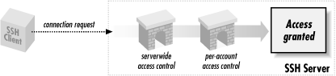

A
large part of the SSH server's job is to grant or deny
connection requests from clients. This is done at two levels:
).
Authentication, as we've seen, means verifying the identity of
the user requesting a connection. Access control means permitting or
denying SSH connections from particular users, machines, or Internet
domains.
5.5.1. Authentication
sshd supports several different techniques for
authentication that may be enabled or disabled. [
Section 3.1.3, "Authentication "] [
Section 3.4.2, "Client Authentication"] For example, if
you don't trust password authentication, you can turn it off
serverwide but still permit public-key authentication.
As SSH has evolved, the syntax for configuring authentication has
changed several times. We cover not only the current keywords but
also the deprecated or obsolete ones, in case you're running an
older version of
sshd.
In
SSH1 and
OpenSSH, different authentication
techniques are turned on and off with keywords of the form:
Name_Of_TechniqueAuthentication
For example, password authentication is controlled by the keyword
Password-Authentication, RSA public-key
authentication by
RSA-Authentication, and so
forth, one keyword per technique. Values may be
yes or
no:
# SSH1, OpenSSH; deprecated for SSH2
RSAAuthentication yes
Early versions of SSH2 also used one
keyword per authentication technique, but keywords were a bit more
generic. Instead of
RSAAuthentication, which
mentions the algorithm RSA, the keyword was changed to
PubKeyAuthentication without naming a specific
algorithm.
# SSH2 only, but deprecated
PubKeyAuthentication yes
This left the door open for the support of other public key
algorithms. The older keywords such as
RSAAuthentication were still usable as synonyms
for the more generic keywords.
SSH2 today uses an entirely different syntax. Instead of creating a
new keyword for each technique, it uses only two keywords,
AllowedAuthentications
and
RequiredAuthentications.
Each is followed by the names of one or more authentication
techniques, for example:
# SSH2 only; recommended technique
AllowedAuthentications password,hostbased,publickey
AllowedAuthentications specifies which techniques
can be used to connect to this SSH server.
[60] In contrast,
RequiredAuthentications specifies which ones must
be used.
[61] A configuration line
like:
# SSH2 only; recommended technique
AllowedAuthentications publickey,password
RequiredAuthentications publickey,password
means that the server requires both public-key and password
authentication before allowing a connection. The
RequiredAuthentications list must be a subset of
AllowedAuthentications: a required technique must
also be allowed. By default,
sshd2 allows only
password and public-key authentication.
If you think about it, these keywords are a little confusing, or at
least not well-chosen. In practice, if you use
RequiredAuthentications at all, it always has
exactly the same value as
AllowedAuthentications:
there's no point in having a method allowed but not in the
"required" set, since that method doesn't get you a
connection. It would be more useful to be able to specify multiple
subsets of the allowed methods, which are the combinations acceptable
for authenticating a client.
Table 5-1 displays the
authentication-related keywords.
Table 5-1. Authentication-Related Keywords
|
Type |
SSH1 |
OpenSSH |
New SSH2 |
Old SSH2 |
AllowedAuthentications
|
No |
No |
Yes |
No |
DSAAuthentication
|
No |
Yes [62] |
No |
No |
KerberosAuthentication
|
Yes |
Yes |
No |
No |
PasswordAuthentication
|
Yes |
Yes |
Deprecated |
Yes |
PubKeyAuthentication
|
No |
No |
Deprecated |
Yes |
RequiredAuthentications
|
No |
No |
Yes |
No |
RhostsAuthentication
|
Yes |
Yes |
No |
Yes |
RhostsPubKeyAuthentication
|
No |
No |
No |
Yes |
RhostsRSAAuthentication
|
Yes |
Yes |
No |
Yes |
RSAAuthentication
|
Yes |
Yes |
Deprecated |
Yes |
SKeyAuthentication
|
No |
Yes |
No |
No |
TISAuthentication
|
Yes |
Yes[63] |
No |
No |
[62]SSH-2 protocol only.
We now describe how to enable and disable each type of
authentication.
5.5.1.1. Password authentication
Password
authentication accepts your login password as proof of identity.
[
Section 3.4.2.1, "Password authentication "] In SSH1 and OpenSSH, password
authentication is permitted or forbidden with the
PasswordAuthentication
keyword, given the value
yes (the default) or
no:
# SSH1, OpenSSH; deprecated for SSH2
PasswordAuthentication yes
PasswordAuthentication works for SSH2, but this
keyword is discouraged. Instead, use the keyword
AllowedAuthentications
with a value of
password:
# SSH2 only
AllowedAuthentications password
Normally, password authentication requires your ordinary login
password. However, this may be changed by compile-time configuration.
For SSH1, if Kerberos or SecurID support has been compiled into the
server, password authentication changes to support Kerberos [
Section 5.5.1.7, "Kerberos authentication"] or SecurID. [
Section 5.5.1.9, "SecurID authentication"]
5.5.1.2. Public-key authentication
Public-key authentication
verifies a user's identity by way of cryptographic keys. [
Section 3.4.2.2, "Public-key authentication"] In SSH1 and OpenSSH/1, public-key
authentication uses RSA encryption and is permitted or forbidden with
the
RSAAuthentication
keyword. It may have the value
yes (the default)
or
no:
# SSH1, OpenSSH; deprecated for SSH2
RSAAuthentication yes
The keyword
RSAAuthentication works for SSH2, as
does the more general-sounding keyword
PubKeyAuthentication,
which has the same function, but both are no longer recommended.
Instead, use the keyword
Allowed-Authentications
with a value of
publickey:
# SSH2 only
AllowedAuthentications publickey
OpenSSH provides public-key authentication for SSH-2 connections with
the
DSAAuthentication
keyword:
# OpenSSH/2 only
DSAAuthentication yes
Public-key authentication is marvelously configurable for most Unix
SSH implementations. See
Chapter 8, "Per-Account Server Configuration" for details on
tailoring authentication for individual accounts.
5.5.1.3. Rhosts authentication
Trusted-host
authentication verifies an SSH client's identity by checking
the remote hostname and username associated with it. [
Section 3.4.2.3, "Trusted-host authentication (Rhosts and RhostsRSA)"] In SSH1 and OpenSSH, two types of trusted-host
authentication are supported. The weaker Rhosts authentication mimics
the behavior of the Berkeley r-commands (
rsh,
rcp,
rlogin), checking the
server files
/etc/hosts.equiv and
~/.rhosts for permission to authenticate and
using the network naming service (e.g., DNS, NIS) and privileged TCP
source port to verify the client host's identity. SSH2
doesn't support this insecure technique.
Rhosts authentication is permitted or forbidden with the
RhostsAuthentication
keyword, given the value
yes (the default) or
no:
# SSH1, OpenSSH
RhostsAuthentication yes
Rhosts authentication can be useful, but unfortunately it also
enables connections via the insecure r-commands, since it uses the
same permission files. To eliminate this potential security risk, use
the SSH-specific files
/etc/shosts.equiv and
~/.shosts instead, deleting
/etc/hosts.equiv and
~/.rhosts. You can also tell the SSH server to
ignore all users'
.rhosts and
.shosts files with the keyword
IgnoreRhosts.
Permissible values are
yes (to ignore them) or
no (the default):
# SSH1, SSH2, OpenSSH
IgnoreRhosts yes
Some subtleties: although the keyword name contains
"Rhosts," remember that it applies to
.shosts files as well. Also, although user files
are ignored by
Ignore-Rhosts,
/etc/hosts.equiv and
/etc/shosts.equiv remain in force.
SSH1 and SSH2 also permit separate control over Rhosts authentication
for root. The keyword
IgnoreRootRhosts
permits or prevents use of the superuser's
.rhosts and
.shosts files,
overriding
IgnoreRhosts:
# SSH1, SSH2
IgnoreRootRhosts yes
Values of
yes (ignore the files) or
no (don't ignore) are permitted. If not
specified, the value of
IgnoreRootRhosts defaults
to that of
IgnoreRhosts. For example, you can
permit all
.rhosts files except root's:
# SSH1 only
IgnoreRhosts no
IgnoreRootRhosts yes
You can also ignore all
.rhosts files except
root's:
# SSH1 only
IgnoreRhosts yes
IgnoreRootRhosts no
Again,
IgnoreRootRhosts doesn't stop the
server from considering
/etc/hosts.equiv and
/etc/shosts.equiv. For stronger security,
it's best to disable
.rhosts access
entirely.
Rhosts authentication can be complicated by other aspects of your
server machine's environment, such as DNS, NIS, and the
ordering of entries in static host files. It may also open new
avenues for attack on a system. [
Section 3.4.2.3, "Trusted-host authentication (Rhosts and RhostsRSA)"]
5.5.1.4. Stronger trusted-host authentication
The second, stronger type of trusted-host authentication is supported
by SSH1, SSH2, and OpenSSH. For SSH1 and OpenSSH/1, it is called
RhostsRSA authentication, and for SSH2, hostbased
authentication.
[64] In either case, the less secure parts of
rhosts authentication are supplemented by
cryptographic tests of host keys. [
Section 3.4.2.3, "Trusted-host authentication (Rhosts and RhostsRSA)"] The
files
/etc/hosts.equiv and
~/.rhosts (and the SSH-specific
/etc/shosts.equiv and
~/.shosts) are still consulted, but they
aren't sufficient to pass the test.
SSH1 and OpenSSH use the keyword
RhostsRSAAuthentication
(surprise!) to enable or disable this type of authentication:
# SSH1, OpenSSH; deprecated for SSH2
RhostsRSAAuthentication yes
The keyword
RhostsRSAAuthentication is accepted by
sshd2, as is the more general-sounding keyword
RhostsPubKeyAuthentication,
which has the same function; however, both keywords are considered
obsolete. Instead, use the keyword
AllowedAuthentications with the value
hostbased:
# SSH2 only
AllowedAuthentications hostbased
5.5.1.5. Fetching public keys of known hosts
sshd2 needs the public keys of
all hosts from which it accepts connections via hostbased
authentication. These keys are kept in separate files in the
directory
/etc/ssh2/knownhosts. A host's
public key is
fetched from this directory whenever that host requests a connection.
Optionally, the server also searches the directory
~/.ssh2/knownhosts in the target user's
account. This optional feature is enabled with the keyword
UserKnownHosts,
with a value of
yes (the default) or
no:
# SSH2 only
UserKnownHosts no
OpenSSH supports the same functionality, but reversed, with the
IgnoreUser-KnownHosts
keyword. The value
yes causes the user's
known hosts database to be ignored; the default is
no:
# OpenSSH only
IgnoreUserKnownHosts yes
Having
sshd consult the user's known hosts
database might be unacceptable in a security-conscious environment.
Since hostbased authentication relies on the integrity and correct
administration of the client host, the system administrator usually
grants hostbased authentication privileges to only a limited set of
audited hosts. If the user's file is respected, however, a user
can extend this trust to a possibly insecure remote host. An attacker
can then:
- Compromise the insecure, remote host
- Impersonate the user on the remote host
- Access the user's local account via SSH, without needing a key
passphrase or the local account password
5.5.1.6. PGP authentication
Pretty
Good Privacy
(PGP)
is another security product employing public-key authentication.
[
Section 1.6.2, "Pretty Good Privacy (PGP)"] PGP keys and SSH keys are implemented
differently and aren't interchangeable. However, recent
versions of SSH2 now support authentication by PGP key, following the
OpenPGP standard. Yes, you can use your favorite PGP key to prove
your identity to an SSH2 server (as long as the key file is
OpenPGP-compatible; some PGP
keys, especially those produced by older software versions,
aren't). At press time, this feature is only sketchily
documented. Here's how to make it work.
First, you need SSH2 2.0.13 or higher, or the corresponding version
from F-Secure, installed on both the client and server machines.
Also, both implementations must be compiled with PGP support
included, using the compile-time flag
-- with-pgp. [
Section 4.1.5.7, "Authentication"]
On the client machine, you need to make your PGP secret key ring and
the desired secret key for authentication available to SSH2 clients.
Here's how:
- Copy your PGP secret key ring to your account's SSH2 directory,
~/.ssh2. Suppose it is called
secring.pgp.
- In an identification file, either
~/.ssh2/identification or another of your
choice, indicate the secret key ring with the keyword
PgpSecretKeyFile:
# SSH2 only
PgpSecretKeyFile secring.pgp
- Identify the PGP key you wish to use for authentication. This may be
done with any of three keywords:
- To identify the key by name, use
IdPgpKeyName:
# SSH2 only
IdPgpKeyName mykey
- To identify the key by its PGP fingerprint, use
IdPgpKeyFingerprint:
# SSH2 only
IdPgpKeyFingerprint 48 B5 EA 28 80 5E 29 4D 03 33 7D 17 5E 2E CD 20
- To identify the key by its key ID, use
IdPgpKeyId:
# SSH2 only
IdPgpKeyId 0xD914738D
For
IdPgpKeyId, the leading
0x
is necessary, indicating that the value is in hexadecimal. You can
give the value in decimal instead, without the leading
0x, but since PGP displays the value in hex
already, it's unlikely you'd want to do this.
On the server machine (say,
server.example.com), you need to make
your public key ring and the desired public key for authentication
available to the SSH2 server:
- Copy your public key ring from the client machine to the server
machine. (Note that this is a key ring, not a lone public key.) Place
the ring into your ~/.ssh2 directory on the
server. Suppose it is called pubring.pgp.
- In your authorization file,
~/.ssh2/authorization, identify the public key
ring with the keyword
PgpPublicKeyFile:
# SSH2 only
PgpPublicKeyFile pubring.pgp
- Identify the public key by name, fingerprint, or key ID as in the
client's identification file. The relevant keywords are
slightly different:
PgpKeyName,
PgpKeyFingerprint,
and
PgpKeyId,
respectively. (The keywords for the identification file begin with
"Id".)
# SSH2 only: use any ONE of these
PgpKeyName mykey
PgpKeyFingerprint 48 B5 EA 28 80 5E 29 4D 03 33 7D 17 5E 2E CD 20
PgpKeyId 0xD914738D
You are done! From the client, initiate an SSH2 session. Suppose you
create an alternative identification file to use PGP authentication,
called
~/.ssh2/idpgp, containing your
PgpSecretKeyFile
and other lines. Use the
-i flag to indicate
this file, and initiate a connection:
$ ssh2 -i idpgp server.example.com
If everything is set up properly, you are prompted for your PGP
passphrase:
Passphrase for pgp key "mykey":
Enter your PGP passphrase, and authentication should succeed.
5.5.1.7. Kerberos authentication
Kerberos
can be used as an authentication mechanism by SSH1 and
OpenSSH.
[65]
We summarize the Kerberos-related configuration keywords here and
defer a more detailed treatment of the topic. [
Section 11.4, "Kerberos and SSH"] Just as this book went to press, SSH2 2.3.0
was released with "experimental" Kerberos-5 support,
which we don't discuss here.
First, note that Kerberos authentication is supported only if it is
enabled at compile time. Unless the configuration option
-- with-kerberos5 (SSH1)
or
-- with-kerberos4
(OpenSSH) is used, Kerberos support isn't present in
sshd.
Assuming the server supports it, Kerberos authentication is enabled
or disabled by the keyword
KerberosAuthentication
with the value
yes or
no:
# SSH1, OpenSSH
KerberosAuthentication yes
The default is
yes if Kerberos support has been
compiled into the server; otherwise, the default is
no.
Connections may be authenticated by Kerberos ticket or by password
(authenticated by the Kerberos server) if password authentication is
also enabled:
# SSH1, OpenSSH
KerberosAuthentication yes
PasswordAuthentication yes
Instead of checking against the local login password,
sshd instead requests a Kerberos TGT for the user
and allows login if the ticket matches the password.
[66] It also
stores that TGT in the user's credentials cache, eliminating
the need to do a separate
kinit.
If Kerberos fails to validate a password, the server optionally
validates the same password by ordinary password authentication. This
is useful in an environment where Kerberos is in use, but not by
everyone. To enable this option, use the keyword
KerberosOrLocalPasswd
with a value of
yes; the default is
no:
# SSH1, OpenSSH
KerberosOrLocalPasswd yes
Finally, the keyword
KerberosTgtPassing
controls whether the SSH server does Kerberos ticket-granting-ticket
(TGT) forwarding:
# SSH1, OpenSSH
KerberosTgtPassing yes
Its default value follows the same rule as
KerberosAuthentication: if Kerberos support is
compiled into the server, the default is
yes,
otherwise
no.
OpenSSH adds the keyword
KerberosTicketCleanup,
which deletes the user's Kerberos ticket cache on logout.
Values are
yes and
no, and the
default is
yes, to perform the deletion:
# OpenSSH only
KerberosTicketCleanup yes
5.5.1.8. TIS authentication
The SSH1 server may authenticate users via the Gauntlet firewall
toolkit from
Trusted Information Systems (TIS). When
an SSH client tries to authenticate via Gauntlet, the SSH server
communicates with Gauntlet's authentication server,
authsrv, forwarding
authsrv
's requests to the client, and the client's
responses to
authsrv.
TIS authentication is a compile-time option, controlled by the
configuration flag
-- with-tis.
[
Section 4.1.5.7, "Authentication"] Assuming support has been compiled into
sshd, TIS authentication is enabled and disabled
by the keyword
TISAuthentication
with a value of
yes or
no (the
default):
# SSH1 only
TISAuthentication yes
See the file
README.TIS in the SSH1 distribution
for further details about TIS authentication. Additional information
on Trusted Information Systems and
authsrv can be
found at:
http://www.tis.com/
http://www.msg.net/utility/FWTK/
http://www.fwtk.org/
5.5.1.9. SecurID authentication
SecurID from Security Dynamics is a
hardware-based authentication technique. Users need a physical card,
called a SecurID card, in order to authenticate. The card contains a
microchip that displays (on a little LCD) an integer that changes at
regular intervals. To authenticate, you must provide this integer
along with your password. Some versions of the SecurID card also have
a keypad that supports entering a password, for two-factor
authentication.
If the SSH1 server is compiled with support for SecurID, using
-- with-securid, password
authentication is transformed into SecurID authentication. [
Section 4.1.5.7, "Authentication"] Users must provide the current integer from
their card in order to authenticate.
5.5.1.10. S/Key authentication
S/Key is a
one-time
password system, created by Bellcore, supported as an SSH
authentication method only by OpenSSH. "One-time" means
that each time you authenticate, you provide a different password,
helping to guard against attacks, since a captured password will
likely be useless. Here's how it works:
- When you connect to a remote service, it provides you with an integer
and a string, called the sequence
number and the
key, respectively.
- You enter the sequence number and key into an
s/key calculator program on
your local machine.
- You also enter a secret passphrase into the calculator, known only to
yourself. This passphrase isn't transmitted over the network,
only into the calculator on your local machine, so security is
maintained.
- Based on the three inputs you provided, the calculator produces your
one-time password.
- You enter the password to authenticate to the remote service.
The OpenSSH server optionally supports S/Key authentication if you
set the keyword
SKeyAuthentication.
The default is
yes, to support it. To turn it off,
use
no.
# OpenSSH only
SkeyAuthentication no
More information on one-time passwords is found at:
http://www.ietf.cnri.reston.va.us/html.charters/otp-charter.html
5.5.1.11. PAM authentication
The Pluggable Authentication Modules
system
(
PAM) by Sun Microsystems is an
infrastructure for supporting multiple authentication methods.
Ordinarily when a new authentication mechanism comes along, programs
need to be rewritten to accommodate it. PAM eliminates this hassle.
Programs are written to support PAM, and new authentication
mechanisms may be plugged in at runtime without further source-code
modification. More PAM information is found at:
http://www.sun.com/solaris/pam/
OpenSSH includes support for PAM. SSH1 1.2.27 has been integrated
with PAM by a third party, but the combination requires changes to
the SSH1 source code. Details are found at:
http://diamond.rug.ac.be/sshd_PAM/
5.5.1.12. AFS token passing
The
Andrew File System (AFS) is a
distributed filesystem with goals similar to NFS, but more
sophisticated and scalable. It uses a modified version of the
Kerberos 4 protocol for authentication.
OpenSSH can be compiled with support for AFS, using the compile-time
flags
-- with-afs and
-- with-kerberos4. The keyword
AFSTokenPassing
controls this feature, given a value of
yes
(accept forwarded tokens, the default) or
no:
# OpenSSH only
KerberosAuthentication yes
KerberosTGTPassing yes
AFSTokenPassing yes
AFSTokenPassing causes OpenSSH to establish
Kerberos/AFS credentials on the remote host, based on your existing
credentials on the client (which you must have previously obtained
using
klog
or
kinit).
This can be a necessity for using OpenSSH at all in an AFS
environment, not just a convenience: if your remote home directory is
on AFS,
sshd needs AFS credentials to access your
remote
~/.ssh directory in order to perform
public-key authentication, for example. In that case, you may also
need to use AFS tools to adjust the permissions on the remote
~/.ssh directory, to allow
sshd to read what it needs to. Just make sure that
others cannot read your sensitive files
(
~/.ssh/identity, any other private key files,
and
~/.ssh/random_seed )
.
For more information on AFS, visit:
http://www.alw.nih.gov/Docs/AFS/AFS_toc.html
http://www.faqs.org/faqs/afs-faq/
5.5.2. Access Control
Serverwide access control permits or
denies connections from particular hosts or Internet domains, or to
specific user accounts on the server machine. It is applied
separately from authentication: for example, even if a user's
identity is legitimate, you might still want to reject connections
from her computer. Similarly, if a particular computer or Internet
domain has poor security policies, you might want to reject all SSH
connection attempts from that domain.
SSH access control is scantily documented and has many subtleties and
"gotchas." The configuration keywords look obvious in
meaning, but they aren't. Our primary goal in this section is
to illuminate the murky corners so you can develop a correct and
effective access-control configuration.
Keep in mind that SSH access to an account is permitted only if both
the server and the account are configured to allow it. If a server
accepts SSH connections to all accounts it serves, individual users
may still deny connections to their accounts. [
Section 8.2, "Public Key-Based Configuration "] Likewise, if an account is configured to
permit SSH access, the SSH server on its host can nonetheless forbid
access. This two-level system applies to all SSH access control, so
we won't state it repeatedly.
Figure 5-2
summarizes the two-level access control system.
[67]

Figure 5-2. Access control levels
5.5.2.1. Account access control
Ordinarily, any
account may receive SSH connections as
long as it is set up correctly. This access may be overridden by the
server keywords
AllowUsers
and
DenyUsers.
AllowUsers
specifies that only a limited set of local accounts may receive SSH
connections. For example, the line:
# SSH1, SSH2, OpenSSH
AllowUsers smith
permits the local smith account and
only the
smith account, to receive SSH connections. The configuration file may
have multiple
AllowUsers lines:
# SSH1, SSH2, OpenSSH
AllowUsers smith
AllowUsers jones
AllowUsers oreilly
in which case the results are cumulative: the local accounts smith,
jones, and oreilly, and only those accounts, may receive SSH
connections. The SSH server maintains a list of all
AllowUsers values, and when a connection request
arrives, it does a string comparison (really a pattern match, as
we'll see in a moment) against the list. If a match occurs, the
connection is permitted; otherwise, it is rejected.
WARNING:
A single AllowUsers keyword in the configuration
file cuts off SSH access for all other accounts
not mentioned. If the configuration file has no
AllowUsers keywords, the server's
AllowUsers list is empty, and connections are
permissible to all accounts.
DenyUsers
is the opposite of
AllowUsers: it shuts off SSH
access to particular accounts. For example:
# SSH1, SSH2, OpenSSH
DenyUsers smith
states that the smith account may not receive SSH connections.
DenyUsers keywords may appear multiple times, just
like
AllowUsers, and the effects are again
cumulative. As for
AllowUsers, the server
maintains a list of all
DenyUsers values and
compares incoming connection requests against them.
Both
AllowUsers and
DenyUsers
can accept more complicated values than simple account names. An
interesting but potentially confusing syntax supported by
sshd1 and
sshd2 is to specify
both an account name and a hostname (or numeric IP address),
separated by an @ symbol:
# SSH1, SSH2
AllowUsers jones@example.com
Despite its appearance, this string isn't an email address, and
it doesn't mean "the user jones on the machine
example.com." Rather,
it describes a relationship between a
local
account, jones, and a
remote client machine,
example.com. The meaning is:
"clients on
example.com may connect to the
server's jones account." Although this meaning is
surprising, it would be even stranger if jones were a remote account,
since the SSH server has no way to verify account names on remote
client machines (except when using hostbased authentication).
For SSH1 and OpenSSH, wildcard characters are acceptable in the user
and host portions of
AllowUsers and
DenyUsers arguments. The ? symbol represents any
single character except @, and the * represents any sequence of
characters, again not including @. For SSH2, you may use full regular
expressions, although the syntax is a little different from usual to
accommodate "fileglob" syntax as well; see
Appendix A, "SSH2 Manpage for sshregex".
WARNING:
The SSH2 regular-expression language
includes keywords with a colon character in them, such as [:digit:].
Using a colon in an SSH2 access-control pattern can cause a nasty,
difficult-to-track-down problem: it is ignored, along with the rest
of your configuration file! The problem is that the parser is a bit
dumb and interprets the colon as introducing a labelled section of
the file. The label doesn't match anything, and so the rest of
the file, now included in the section, is silently ignored. You can
avoid this problem simply by placing the pattern inside quotation
marks:
AllowHosts "10.1.1.[:digit:]##"
Though undocumented, this quoting syntax works.
Here are some examples. SSH connections are permitted only to
accounts with five-character names ending in "mith":
# SSH1, SSH2, OpenSSH
AllowUsers ?mith
SSH connections are permitted only to accounts with names beginning
with the letter "s", coming from hosts whose names end in
".edu":
# SSH1, SSH2, OpenSSH
AllowUsers s*@*.edu
SSH2 connections are permitted only to account names of the form
"test
N " where
N is a number, e.g.,
"test123".
# SSH2 only
AllowUsers test[0-9]##
One unfortunate, glaring omission is that you can't specify IP
networks with traditional "address/masklength" syntax,
e.g., 10.1.1.0/28 to mean the addresses 10.1.1.0 through
10.1.1.15.
[68] To
restrict connections to come from this range of addresses with
AllowHosts
[
Section 5.5.2.3, "Hostname access control"] is rather more verbose:
# SSH1
AllowHosts *@10.1.1.? *@10.1.1.10 *@10.1.1.11 *@10.1.1.12 *@10.1.1.13
AllowHosts *@10.1.1.14 *@10.1.1.15
or complicated:
# SSH2
AllowHosts *@10.1.1.(?|(1[0-5]))
Restricting to a network that falls on an octet boundary, of course,
is easier:
# SSH1, SSH2
# Allow connections only from 10.1.1.0/24
AllowHosts *@10.1.1.*
Note, though, that this can be easily circumvented; an attacker need
only control a domain server somewhere and connect from a machine
named 10.1.1.evil.org. A more effective statement is:
# SSH2 only
AllowUsers "*@10.1.1.[:isdigit:]##"
Even this isn't foolproof. Address and hostname-based
restrictions are weak restrictions at best; they should be used only
as an adjunct to a strong authentication method.
Multiple strings may appear on a single
AllowUsers
line. SSH1 and OpenSSH separate strings with whitespace; however, the
syntax differs between SSH1/OpenSSH and SSH2:
# SSH1, OpenSSH
AllowUsers smith jones cs*
and SSH2 separates them with commas, no whitespace permitted:
# SSH2 only
AllowUsers smith,jones,cs*
AllowUsers and
DenyUsers may be
combined effectively. Suppose you're teaching a course and want
your students to be the only users with SSH access to your server. It
happens that only student usernames begin with "stu", so
you specify:
# SSH1, SSH2, OpenSSH
AllowUsers stu*
Later, one of your students, stu563, drops the course so you want to
disable her SSH access. Simply change the configuration to:
# SSH1, SSH2, OpenSSH
AllowUsers stu*
DenyUsers stu563
Hmm... this seems strange. The two lines appear to conflict because
the first permits stu563 but the second rejects it. The server
handles this in the following way: if any line prevents access to an
account, the account can't be accessed. So in the preceding
example, stu563 is denied access by the second line.
Consider another example:
# SSH1, SSH2, OpenSSH
AllowUsers smith
DenyUsers s*
It permits SSH connections to the smith account but denies
connections to any account beginning with "s". What does
the server do with this clear contradiction? It rejects connections
to the smith account, following the same rule: if any restriction
prevents access, such as the
DenyUsers line shown,
access is denied. Access is granted only if there are no restrictions
against it.
sshd can store at most 256 user strings for
AllowUsers and 256 for
DenyUsers. This undocumented static limit applies
if the strings follow a single keyword (e.g.,
AllowUsers followed by 256 strings) or multiple
keywords (e.g., 16
AllowUsers keywords with 16
strings each). That is, the limit is internal to the server, not
related to the length of a line in the configuration file.
Finally, here is a useful configuration example, expressed in SSH1
syntax:
AllowUsers walrus@* carpenter@* *@*.beach.net
This restricts access for most accounts to connections originating
inside the domain
beach.net -- except for the accounts
"walrus" and "carpenter", which may be
accessed from anywhere. The @* following walrus and carpenter
isn't strictly necessary, but it helps make clear the intent of
the line.
It's worth noting that hostnames in these access-control
statements are dependent on the integrity of DNS, which is easily
spoofed. If this is a concern, consider using IP addresses instead,
even though maintenance might be more cumbersome.
5.5.2.2. Group access control
sshd may permit
or deny SSH access to all accounts in a Unix group on the server
machine. The keywords
AllowGroups
and
DenyGroups
serve this purpose. They are followed by one or more Unix group
names:
# SSH1, OpenSSH (separation by whitespace)
AllowGroups faculty
DenyGroups students secretaries
# SSH2 only (separation by comma)
AllowGroups faculty
DenyGroups students,secretaries
These keywords operate much like
AllowUsers and
DenyUsers. SSH1 and OpenSSH accept the wildcards
* and
? within group names, whereas SSH2
accepts its usual regular expressions (see
Appendix A, "SSH2 Manpage for sshregex"), and you may provide multiple strings per
line:
# SSH1, OpenSSH
AllowGroups ?aculty s*s
# SSH2 only
AllowGroups ?aculty,s*s
Unfortunately, these directives apply only to the target user's
primary group, the one listed in the
passwd record for the account. An account may
belong to other groups as well (e.g., by entry in the
/etc/groups file or NIS map), but SSH
doesn't notice. It's a pity: if supplementary groups were
supported, you could easily designate a subset of SSH-accessible
accounts by defining a group -- say,
sshusers -- and configure the SSH server with
AllowGroups sshusers. This feature also
automatically prevents access to system accounts such as
bin,
news, and
uucp that don't require SSH. Perhaps some
SSH implementors will fix this someday.
By default, access is allowed to all groups. If any
AllowGroups keyword appears, access is permitted
to only the primary groups specified (and may be further restricted
with
DenyGroups).
As was the case for
AllowUsers and
DenyUsers, conflicts are resolved in the most
restrictive way. If any
AllowGroups or
DenyGroups line prevents access to a given group,
access is denied to that group even if another line appears to permit
it. Also as before, there is a static limit of 256 strings that may
follow
Allow-Groups or
DenyGroups keywords in the configuration file.
5.5.2.3. Hostname access control
In the discussion of
AllowUsers and
DenyUsers, we described how to permit or reject
SSH-1 connections from a given host, say,
example.com:
# SSH1, OpenSSH
AllowUsers *@example.com
DenyUsers *@example.com
SSH1 and SSH2 provide the keywords
AllowHosts
and
DenyHosts
to restrict access by s host more concisely, getting rid of the
unnecessary account-name wildcard:
# SSH1, SSH2
AllowHosts example.com
DenyHosts example.com
The
AllowHosts and
DenyHosts
keywords permit or prevent (respectively) SSH connections from given
hosts.
[69] As with
AllowUsers and
DenyUsers:
- Values may contain the wildcards ? and * (SSH1, OpenSSH) or regular
expressions (SSH2, Appendix A, "SSH2 Manpage for sshregex").
- Values may contain multiple strings separated by whitespace (SSH1,
OpenSSH) or commas (SSH2).
- Keywords may appear multiple times in the configuration file, and the
results are cumulative.
- Hostnames or IP addresses may be used.
- At most 256 strings may follow AllowHosts or
DenyHosts keywords in the configuration file.
AllowHosts and
DenyHosts have a
unique feature among the access-control keywords. If
sshd1 refuses a connection based on
AllowHosts or
DenyHosts, it
optionally prints an informative message for the client:
Sorry, you are not allowed to connect.
This printing is controlled by the
SilentDeny
keyword. If its value is
no (the default), the
message is printed, but if the value is
yes, the
message is suppressed (i.e., silent denial):
# SSH1 only
SilentDeny no
As a side effect,
SilentDeny also prevents the
failed connection attempt from appearing in the server's log
messages. With
SilentDeny turned off, you see this
in the log:
log: Connection from client.marceau.net not allowed.
fatal: Local: Sorry, you are not allowed to connect.
When
SilentDeny is turned on, these messages
don't appear in the server logs.
SilentDeny
doesn't apply to any other access-control keywords
(
DenyUsers,
DenySHosts, etc.),
nor is it related to authentication.
5.5.2.4. shosts access control
AllowHosts and
DenyHosts offer
total hostname-based access control, regardless of the type of
authentication requested. A similar but less restrictive access
control is specific to trusted-host authentication. You can deny
access to hosts that are named in
.rhosts,
.shosts,
/etc/hosts.equiv,
and
/etc/shosts.equiv files. This is accomplished with the
keywords
AllowSHosts
and
DenySHosts.
[70]
For example, the line:
# SSH1, SSH2
DenySHosts badguy.com
forbids access by connections from
badguy.com, but only when trusted-host
authentication is being attempted. Likewise,
AllowSHosts permits access only to given hosts
when trusted-host authentication is used. Values follow the same
syntax as for
AllowHosts and
DenyHosts. As a result, system administrators can
override values in users'
.rhosts and
.shosts files (which is good, because this
can't be done via the
/etc/hosts.equiv or
/etc/shosts.equiv files).
As for
AllowHosts and
DenyHosts:
- Values may contain the wildcards ? and * (SSH1) or regular
expressions (SSH2, Appendix A, "SSH2 Manpage for sshregex").
- Values may contain multiple strings separated by whitespace (SSH1) or
commas (SSH2).
- Keywords may appear multiple times in the configuration file, and the
results are cumulative.
- Hostnames or IP addresses may be used.
- There is a static limit of 256 strings that may follow
AllowSHosts or DenySHosts
keywords in the configuration file.
5.5.2.5. Root access control
sshd has a
separate access-control mechanism for the superuser. The keyword
PermitRootLogin
allows or denies access to the root account by SSH:
# SSH1, SSH2, OpenSSH
PermitRootLogin no
Permissible values for this keyword are
yes (the
default) to allow access to the root account by SSH,
no to deny all such access, and
nopwd (SSH1, SSH2) or
without-password (OpenSSH) to allow access except
by password authentication.
In SSH1 and OpenSSH,
PermitRootLogin applies only
to logins, not to forced commands specified in
authorized_keys. [
Section 8.2.4, "Forced Commands "]
For example, if root's
authorized_keys
file contains a line beginning with:
command="/bin/dump" ....
then the root account may be accessed by SSH to run the
dump command, no matter what the value of
PermitRootLogin. This capability lets remote
clients run superuser processes, such as backups or filesystem
checks, but not unrestricted login sessions.
The server checks
PermitRootLogin after
authentication is complete. In other words, if
PermitRootLogin is
no, a client
is offered the opportunity to authenticate (e.g., is prompted for a
password or passphrase) but is shut down afterward regardless.
We've previously seen a similar keyword,
IgnoreRootRhosts,
that controls access to the root account by trusted-host
authentication. It prevents entries in
~root/.rhosts and
~root/.shosts from being used to authenticate
root. Because
sshd checks
PermitRootLogin after authentication is complete,
it overrides any value of
IgnoreRootRhosts.
Table 5-2 illustrates the interaction of these two
keywords.
Table 5-2. Can root Log In?
|
IgnoreRootRhosts yes |
IgnoreRootRhosts no |
|
PermitRootLogin yes |
Yes, except by trusted-host |
Yes |
|
PermitRootLogin no |
No |
No |
|
PermitRootLogin nopwd (nopassword) |
Yes, except by trusted-host or password |
Yes, except by password |
5.5.2.6. Restricting directory access with chroot
The Unix system call
chroot causes a process to
treat a given directory as the root directory. Any attempt to
cd outside the subtree rooted at the given
directory fails. This is useful for restricting a user or process to
a subset of a filesystem for security reasons.
SSH2 provides two keywords for imposing this restriction on incoming
SSH clients.
ChRootUsers
specifies that SSH clients, when accessing a given account, are
restricted to the account's home directory and its
subdirectories:
# SSH2 only
ChRootUsers smith
Several accounts may be specified on the same line, separated by
commas, meaning that each of these accounts are individually
restricted when accessed via SSH2:
# SSH2 only
ChRootUsers smith,jones,mcnally
The other keyword,
ChRootGroups,
works similarly but applies to all accounts in a given Unix group:
# SSH2 only
ChRootGroups users,wheel,mygroup
WARNING:
ChRootGroups only examines an account's
primary group; supplementary groups aren't
considered. This makes it a much less useful feature than it would
otherwise be. Hopefully, a fuller implementation will come in the
future.
To make this
chroot functionality work, you
might need to copy some system files into the account in question.
Otherwise the login might fail because it can't access needed
resources, such as shared libraries. On our Linux system, we needed
to copy the following programs and libraries into the account:
/bin/ls
/bin/bash
/lib/ld-linux.so.2
/lib/libc.so.6
/lib/libtermcap.so.2
This sort of thing can be reduced by statically linking the SSH
executables. SSH2 recently added a tool called
ssh-chrootmgr to help with this process;
unfortunately, it occurred too close to press time for us to review
it. See the manpage for details.
5.5.2.7. Summary of authentication and access control
SSH provides several ways to
permit or restrict connections to particular accounts or from
particular hosts.
Table 5-3
and
Table 5-4
summarize the available
options.
Table 5-3. SSH1 and OpenSSH Summary of Authentication and Access Control
|
If you are... |
And you want to allow or restrict... |
Then use... |
|
User |
Connections to your account by public-key authentication |
authorized_keys [Section 8.2.1, "SSH1 Authorization Files "] |
|
Administrator |
Connections to an account |
AllowUsers, DenyUsers |
|
User |
Connections by a host |
authorized_keys from="..." option
[Section 8.2.5.1, "Simulating "from" with SSH2 "] |
|
Administrator |
Connections by a host |
AllowHosts,
DenyHosts (or
AllowUsers, DenyUsers) |
|
User |
Connections to your account by trusted-host authentication |
.rhosts, .shosts |
|
Administrator |
Trusted-host authentication |
RhostsAuthentication,
RhostsRSAAuthentication,
IgnoreRhosts, AllowSHosts,
DenySHosts, /etc/hosts.equiv,
/etc/shosts.equiv |
|
Administrator |
Root logins |
IgnoreRootRhosts,
PermitRootLogin |
Table 5-4. SSH2 Summary of Authentication and Access Control
|
If you are... |
And you want to allow or restrict... |
Then use... |
|
User |
Connections to your account by public-key authentication |
authorization file [Section 8.2.2, "SSH2 Authorization Files "] |
|
Administrator |
Connections to an account |
AllowUsers, DenyUsers |
|
User |
Connections by a host |
N/A |
|
Administrator |
Connections by a host |
AllowHosts, DenyHosts |
|
User |
Connections to your account by trusted-host authentication |
.rhosts, .shosts |
|
Administrator |
Trusted-host authentication |
AllowedAuthentications,
AllowSHosts, DenySHosts,
/etc/hosts.equiv,
/etc/shosts.equiv |
|
Administrator |
Root logins |
PermitRootLogin |